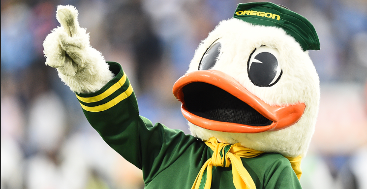
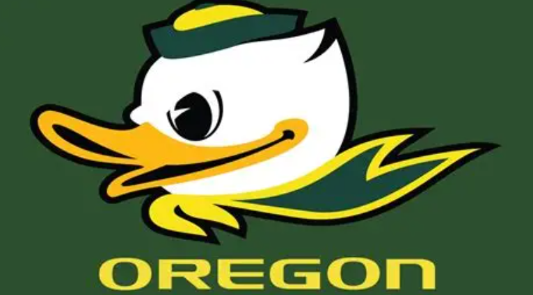
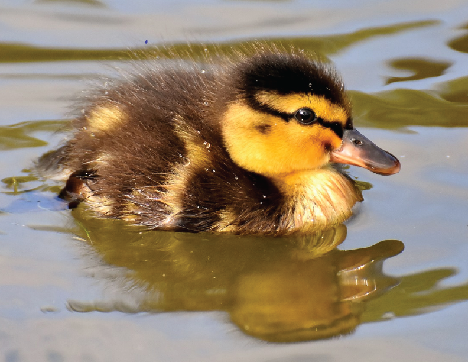
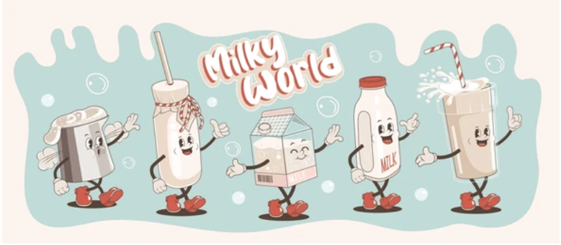
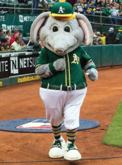
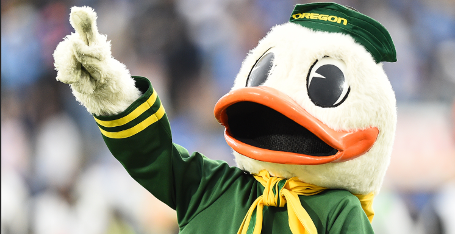
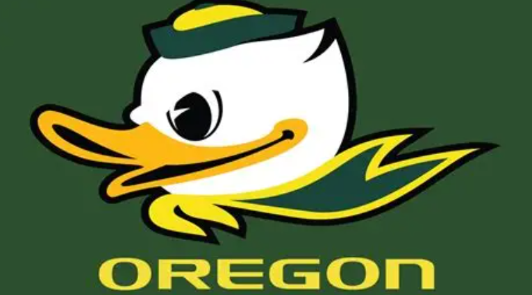
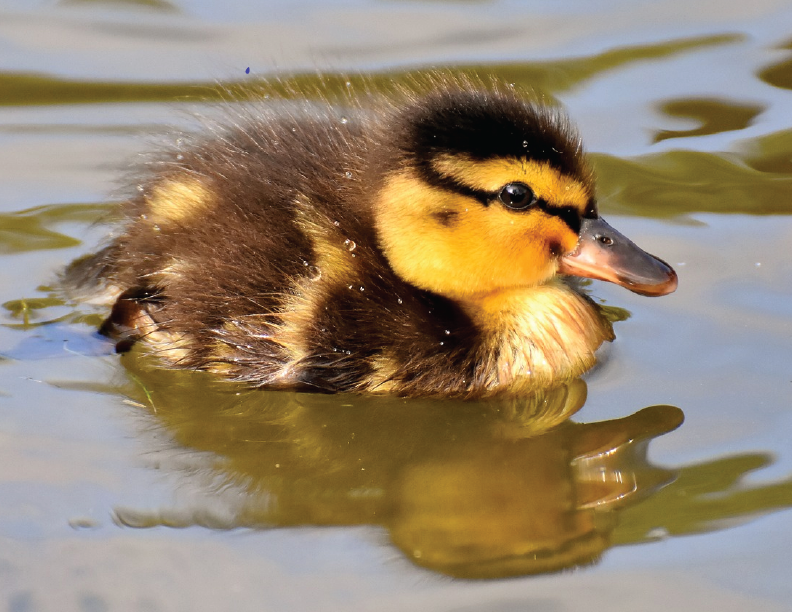
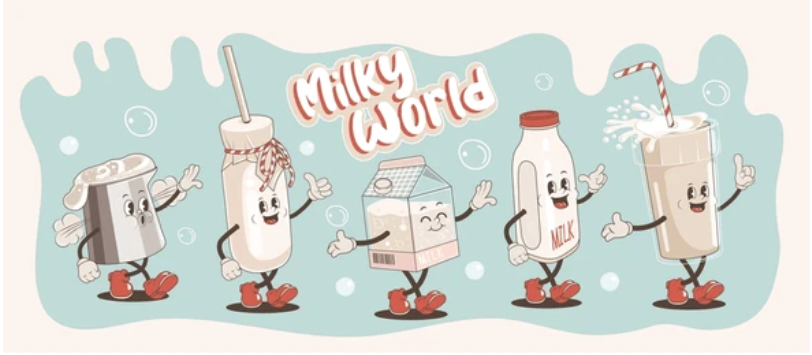
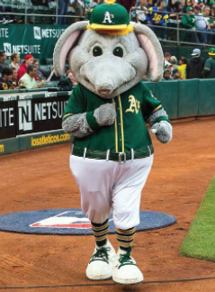

The Hulking Ducks

Project Goal
The goal of this project was to create a mascot for a fictional sports team of my choice. I decided baseball would be a good sport to create a mascot for, and I wanted to create a mascot that was fun and playful, but also had a strong different from the typical mascots that you see in sports.
research
 









Ideation
The ideation process for this project was a lot of fun. I had a lot of ideas for the mascot, but I wanted to make sure that it was something that was unique and stood out something different from everyone else. I also wanted to make sure that it was something that would appeal to a wide audience. I ended up going with a duck because I thought it was a fun and playful animal that would be easy to recognize. I also wanted to make sure that the duck had a strong and muscular appearance, which is why I gave it a muscle physique.
Mockups


Final analysis
In the end the mascot name and overall design and feel of the mascot turned out very similar to what I had originally envisioned. he looks fun and playful, but also strong and powerful.